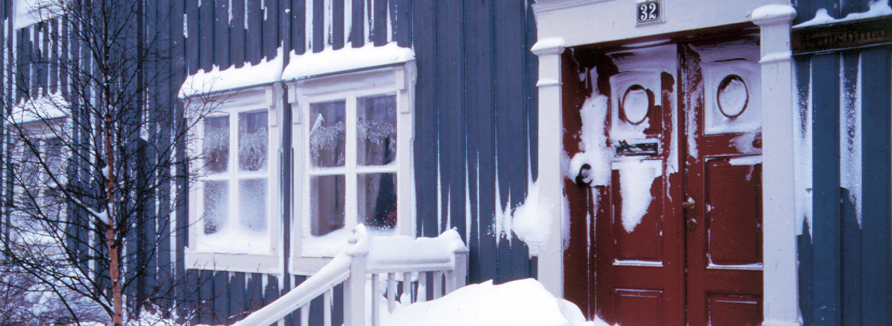
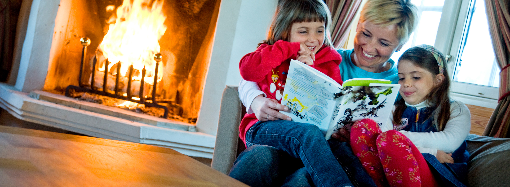

<!DOCTYPE html>
<html>
  <head>
    <title>Vinduer - Rørosvinduet.no</title>
    <meta name="viewport" content="width=device-width, initial-scale=1.0">
    <meta charset="utf-8"> 
    <!-- Bootstrap -->
    <link href="css/bootstrap.css" rel="stylesheet" media="screen">
    
    <!-- Custom styling -->
    <link href='http://fonts.googleapis.com/css?family=Ropa+Sans' rel='stylesheet' type='text/css'>
    <link href="css/global.css" rel="stylesheet" media="screen">
    
	<link href="//netdna.bootstrapcdn.com/font-awesome/3.2.1/css/font-awesome.css" rel="stylesheet">

    <!-- HTML5 shim and Respond.js IE8 support of HTML5 elements and media queries -->
    <!--[if lt IE 9]>
      <script src="../../assets/js/html5shiv.js"></script>
      <script src="../../assets/js/respond.min.js"></script>
    <![endif]-->
  </head>
  <body>
  <div id="myCarousel" class="carousel slide">
	      <!-- Indicators -->
	      <ol class="carousel-indicators">
	        <li data-target="#myCarousel" data-slide-to="0" class="active"></li>
	        <li data-target="#myCarousel" data-slide-to="1"></li>
	        <li data-target="#myCarousel" data-slide-to="2"></li>
	      </ol>
	      <div class="carousel-inner">
	        <div class="item active">
	          
	          <div class="container">
	            <div class="carousel-caption">
	              <h1>Skapt for et langt og hardt liv.</h1>
	            </div>
	          </div>
	        </div>
	        <div class="item">
	          
	          <div class="container">
	            <div class="carousel-caption">
	              <h1>Another example headline.</h1>
	            </div>
	          </div>
	        </div>
	        <div class="item">
	          
	          <div class="container">
	            <div class="carousel-caption">
	              <h1>One more for good measure.</h1>
	            </div>
	          </div>
	        </div>
	      </div>
	      <a class="left carousel-control" href="#myCarousel" data-slide="prev"><span class="glyphicon glyphicon-chevron-left"></span></a>
	      <a class="right carousel-control" href="#myCarousel" data-slide="next"><span class="glyphicon glyphicon-chevron-right"></span></a>
		</div><!-- carousel -->
		
	  	<div class="logoLine">
		  	<div class="container">
			  	<a href="#" class="brand"></a>
		  	</div>
	  	</div>
			<nav class="navbar navbar-default navbar-fixed-top" role="navigation">
		  <!-- Brand and toggle get grouped for better mobile display -->
		  <div class="navbar-header">
		    <button type="button" class="navbar-toggle" data-toggle="collapse" data-target=".navbar-ex1-collapse">
		      <span class="sr-only">Toggle navigation</span>
		      <span class="icon-bar"></span>
		      <span class="icon-bar"></span>
		      <span class="icon-bar"></span>
		    </button>
		  </div>
		
		  <!-- Collect the nav links, forms, and other content for toggling -->
		  <div class="collapse navbar-collapse navbar-ex1-collapse">
		    <div class="container navInner">
		    
		    <ul class="nav nav-justified mainNav">
		      <li class="dropdown">
		        <a href="#" class="dropdown-toggle" data-toggle="dropdown">Vinduer <b class="caret"></b></a>
		        <ul class="dropdown-menu">
		          <li><a href="#">Røros Original Koblet</a></li>
		          <li><a href="#">Røros Vinduet Isoler</a></li>
		        </ul>
		      </li>
		      
		      <li class="dropdown">
		        <a href="#" class="dropdown-toggle" data-toggle="dropdown">Dører <b class="caret"></b></a>
		        <ul class="dropdown-menu">
		          <li><a href="#">Speildører</a></li>
		          <li><a href="#">Paneldører</a></li>
		          <li><a href="#">Terrassedører</a></li>
		        </ul>
		      </li>
		      
		      <li class="dropdown">
		        <a href="#" class="dropdown-toggle" data-toggle="dropdown">Om oss <b class="caret"></b></a>
		        <ul class="dropdown-menu">
		          <li><a href="#">Historien</a></li>
		          <li><a href="#">Salg og produksjon</a></li>
		          <li><a href="#">Ledige stillinger</a></li>
		          <li><a href="#">Rørs miljø og kvalitet</a></li>
		        </ul>
		      </li>
		      
		      <li class="dropdown">
		        <a href="#" class="dropdown-toggle" data-toggle="dropdown">Kundeservice <b class="caret"></b></a>
		        <ul class="dropdown-menu">
		          <li><a href="#">Kontaktinfo/ordrekontor og service</a></li>
		          <li><a href="#">Reklamasjoner/Natre skjema</a></li>
		          <li><a href="#">Ofte stilte spørsmål/servicehåndbok</a></li>
		          <li><a href="#">Salgs- og leveringsbetingelser</a></li>
		        </ul>
		      </li>
		    
		    
		    </ul></div><div class="stichline"></div>
		  </div><!-- /.navbar-collapse -->
		</nav>
		</div><!-- container end -->
		
			<div class="row">
			<div class="stichline"></div>
			<div class="container contentContainer">
				
				<div class="col-sm-12 col-md-9 content">
					<h5><a href="#">Vinduer</a></h5>
					

					
						<p class="ingress">Røros Vinduer leveres i et utall utførelser og varianter. Enten ditt behov er vinduer til en enkel bod eller til en eksklusiv hytte eller enebolig, finner du de rette produktene i Røros-sortimentet. </p>
						<div class="clearfix products">
							<div class="col-md-6 nopad img-rounded">
								
								<p><a href="#" class="bigLink">Røros Original Koblet</a></p>
							</div>
							
							<div class="col-md-6 nopad img-rounded" width="100%" height="200" />
							 	
							 	<p><a href="#" class="bigLink">Røros Isoler</a></p>
							</div>
							</div>
					
							
						
					
						
						
						
						<p>Vi skiller våre vindustyper i to hovedkategorier: Røros Original (Det originale hyttevinduet)  og Røros Isoler. Begge vindustyper er produsert av førsteklasses vakuumimpregnert laminert kvistfri furu. Original er koblede vinduer med ekte gjennomgående tresprosser , mens Isolervinduer er et bredt sortiment av vinduer med 2- eller 3-lags glass med ulike sprosseløsninger. </p>
	<p>Her kan du kombinere med et utall hengsleløsninger og glassvalg (se mer detaljert beskrivelse på produktoppslagene).</p>
	
				<h4>Fargevalg:</h4>
				
				<blockquote class="lessmarg">Alle våre vinduer kan  leveres i den <b>NCS fargekode</b> du ønsker. Standard farge er hvit S-0502Y.
				</blockquote>
					
				<h4>Foringer:</h4>
				
					<p>Våre vinduer kan leveres med ferdigtilpassede utforinger i laminert kvistfri furu. Hjørnesammenføyninger er med not og fjær for hurtig og lett montering og gir tette sammenføyninger i hjørnene. Foringene leveres med lang fjær og kan tilpasses individuelt på byggeplass. Ved spesialvinduer, som for eksempel skrå vinduer vil disse lages med overmål slik at dette justeres ved montering. Leveres som standard i hvit NCS S-0502Y, men kan også leveres ubehandlet eller i andre NCS farger.</p>
					
					
					
				</div>
				
				<aside class="col-sm-12 col-md-3">
					<ul>
						<li><a href="#">Vinduer</a></li>
						<li><a href="#">Røros Original Koblet</a></li>
						<li><a href="#">Røros Isoler</a></li>
							<ul>
								<li><a href="#">Sidehengslet/Topphengslet</a></li>
								<li><a href="#">Toppsving</a></li>
								<li><a href="#">Sidesving</a></li>
								<li><a href="#">Fastkarm</a></li>
							</ul>
					</ul>
				</aside>
				
				
			  
			
			</div><!-- container end -->
			</div><!-- row1 -->
			
		
		<footer>
		<div class="container">
			<div class="col-sm-6 col-md-4">
				<ul>
					<li><h4>Vinduer</h4></li>
					<li><a href="#">Lala</a></li>
					<li><a href="#">Lolo</a></li>
				</ul>
			</div>
			<div class="col-sm-6 col-md-4">
				<ul>
					<li><h4>Dører</h4></li>
					<li><a href="#">Lala</a></li>
					<li><a href="#">Lolo</a></li>
				</ul>
			</div>
			<div class="col-sm-6 col-md-4">
				<ul>
					<li><h4>Kontakt</h4></li>
					<li>7374 Røros<br />
						Tlf.: 72 40 63 00<br />
						Fax: 72 40 62 91<br />
						E-mail: <a href="#" class="mail">ordre.roros@roros-bruk.no</a><br /><br />
						Ring eller send oss en mail hvis du vil ha tilsendt brosjyre, prisliste og/eller monteringsanvisning.</li>
				</ul>
			</div>
			</div><!-- container end -->
			<div class="stichline whiteline"></div><p class="copyright">&copy; 2013 - <a href="http://isola.no">Isola AS</a></p>
		</footer>
		
		
		
  	
  
    

    <!-- jQuery (necessary for Bootstrap's JavaScript plugins) -->
    <script src="//code.jquery.com/jquery.js"></script>
    <!-- Include all compiled plugins (below), or include individual files as needed -->
    <script src="js/bootstrap.min.js"></script>
    <script src="js/flowtype.js"></script>
    <script src="js/admin.js"></script>
  
   
    	  
   
  
  </body>
</html>